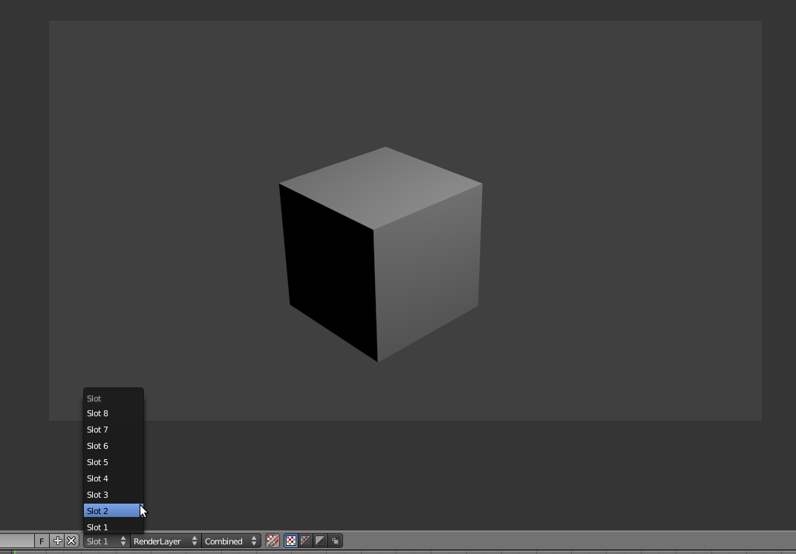
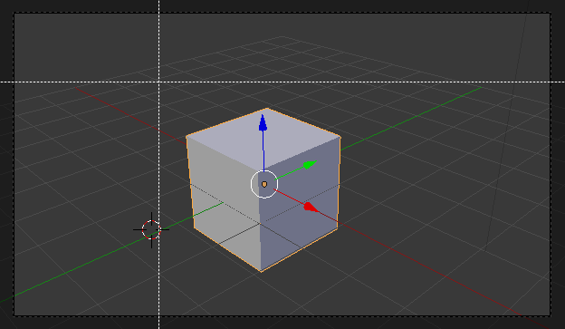
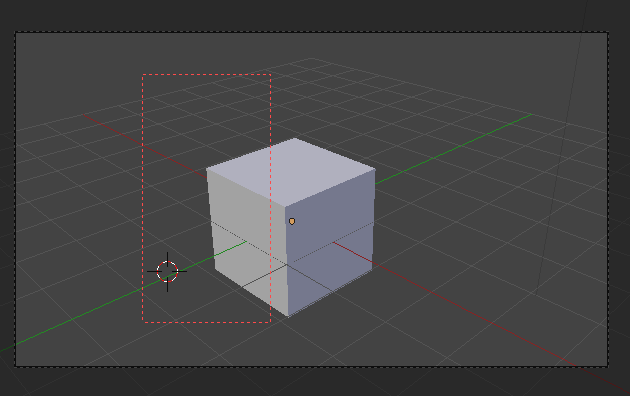
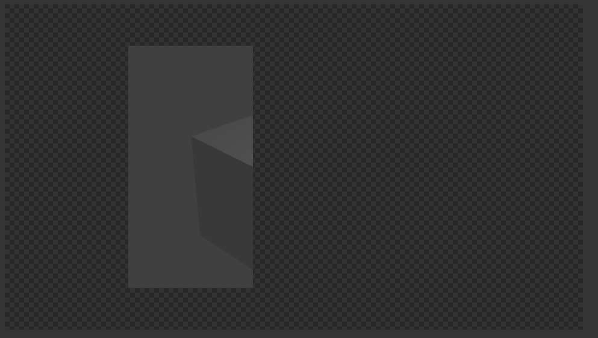
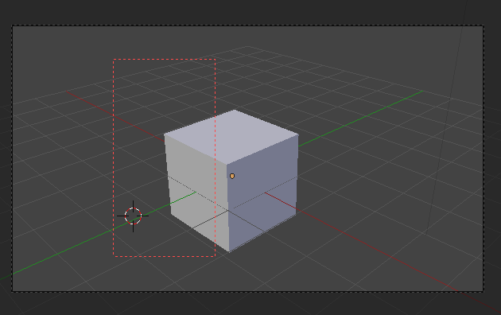
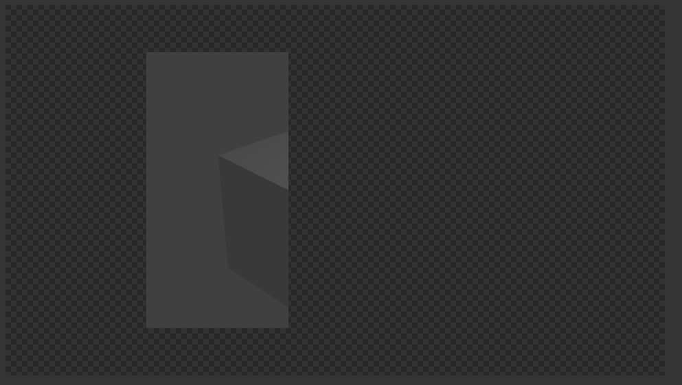
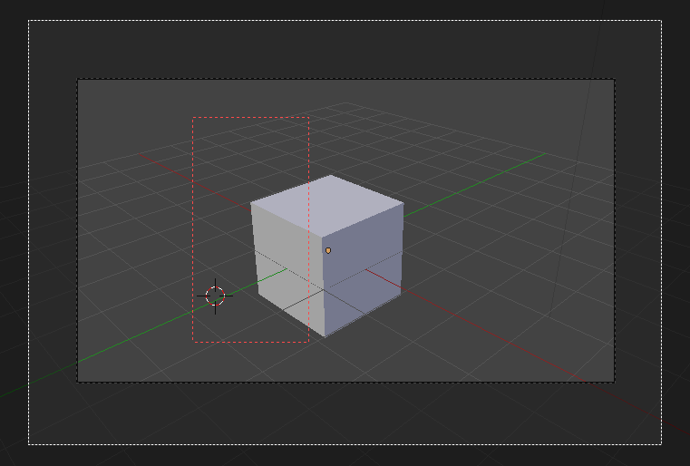

Introdução à renderização no Blender
Definição
Renderização (Rendering) significa processamento digital. Em 3D, descreve o processo de conversão de dados 3D numa imagem bidimensional, criação de uma imagem a partir de um modelo ou cena através de um software específico. O ficheiro 3D armazena dados sobre geometria, ponto de vista, perspetiva, iluminação, materiais, etc. O software de renderização interpreta esses dados e cria a sua tradução em 2D.
Blender Render, Cycles e Freestyle
Cycles é o nome de um novo motor de renderização do Blender. Disponível desde o Blender 2.61, o Cycles ainda está em desenvolvimento. No entanto, o elevado nível de maturação entretanto atingido permite já a sua utilização em produção.
Alguns termos e conceitos importantes
Os motores de renderização são muitas vezes distinguidos entre unbiased e biased. Unbiased rendering engines são softwares que baseiam a sua síntese de imagem nos princípios da física, são fisicamente corretos. Renders são mais realistas mas mais morosos.
Render farm é um cluster de computadores criado para renderizar um projeto (geralmente, de animação ou vfx). Estes computadores podem renderizar várias frames em simultâneo ou renderizar partes de uma mesma frame (bucket rendering).
- Queue manager: software que distribui automaticamente os processos entre os vários processadores disponíveis.
- Slave ou Render node: sistema que tem como função processar tarefas de renderização.
- Master: sistema que coordena a rede.
- Client: sistema que submete tarefas de renderização.
GPU (Graphics Processing Unit) rendering é o processo que permite utilizar a placa gráfica em vez do processador central do computador (CPU) para renderizar. Geralmente, é mais rápido a renderizar (embora dependa da placa) mas pode suscitar problemas em cenas mais complexas pelos limites de memória da placa.
Funcionalidades úteis
Slots de render
As slots para renderização são uma funcionalidade extremamente útil para comparar facilmente entre resultados.
Sempre que renderiza, se não fizer qualquer alteração, o Blender armazena o seu render na Slot 1. É esta a slot escolhida ou ativada por pré-definição.
No entanto, se, na janela UV/Image Editor (na janela onde surge o seu render), escolher outra slot (ver imagem abaixo), o render seguinte vai ser armazenado na slot escolhida. Isto permite ter vários renders em slots diferentes e comparar rapidamente entre diversos resultados.
Play renderização
Quando renderiza várias frames de uma animação, para ver o resultado animado não é necessário renderizar em formato vídeo, pode utilizar o atalho Ctrl + F11 ou a opção Play Rendered Animation (menu Render, disponível no topo).
As frames que estiverem na pasta Output irão ser exibidas nas FPS definidas.
Por pré-definição, o Blender utiliza o seu próprio player mas é possível utilizar outros players externos. Na imagem abaixo é possível ver que o Blender está configurado para utilizar o player Djv.

Render Border
A opção Render Border permite renderizar apenas uma parte da imagem.
Em modo de visão de câmara, clique em CTRL+B e desenhe um retângulo com a parte que pretende renderizar.
 



Para remover a Render Border, clique em CTRL+B e desenhe um retângulo que inclua a totalidade da vista da câmara.
Boom Smash
Ver texto sobre Boom Smash.